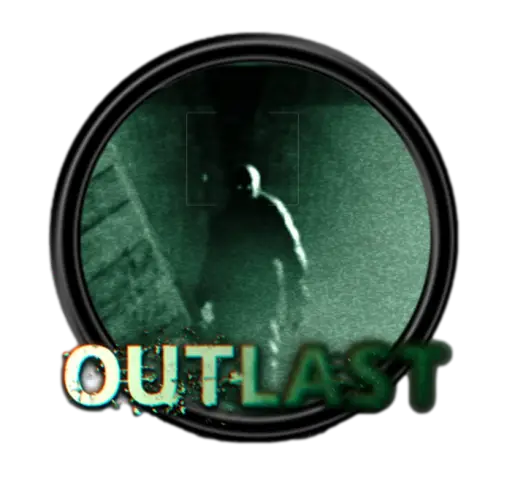
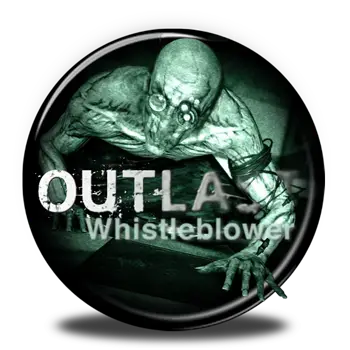
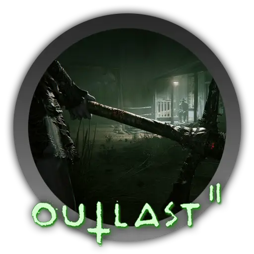
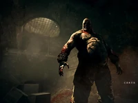
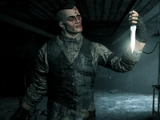
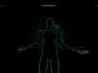
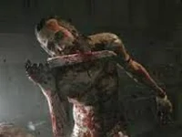

OUTLAST
Bienvenidos al infierno
¿Listo para esconderse?
OUTLAST I
El juego original de Outlast lanzado en 2013 toma lugar en las remotas montañas de Colorado donde el horror espera dentro del Hospital Psiquiátrico de Mount Massive. Una gran casa abandonada para los enfermos mentales, el Manicomio Mount Massive fue recientemente reinagurado por la "Research and Charity” sucursal de la transnacional Corporación Murkoff, y ha estado operando en absoluto secreto. Actuando por consejo de una fuente anónima, el periodista independiente Miles Upshur irrumpe en la facilidad y lo que el descubre camina totalmente en la linea entre lo terrorífico, la ciencia, religión, naturaleza y algo más. Una vez dentro, su única esperanza de escapar se encuentra con la terrible verdad en el corazón de Mount Massive.
OUTLAST DLC Whistleblower
Algunas horas después de que un extraño evento causara la liberación de todos los pacientes, Park, con una cámara de mano, comienza a recorrer el manicomio tras escapar de su celda solo para descubrir que los pacientes enloquecidos se encuentran masacrando a los empleados y guardias del manicomio. Al poco tiempo, Park comienza a ser perseguido por un paciente que práctica el canibalismo, Frank Manera. Habiendo eludido al peligroso paciente, Park intenta escapar del manicomio pidiendo ayuda por radio pero es interrumpido por Blaire, que destruye la radio, lo noquea y deja a su suerte en los pasillos, donde deambula el paciente Chris Walker.
OUTLAST II
Blake y Lynn Langermann son una pareja de reporteros que deciden viajar al desierto de Arizona a realizar un reportaje sobre el más reciente caso que investigan; la misteriosa muerte de una joven embarazada sin identificar que fue encontrada deambulando sola cerca del desierto de Arizona. Mientras sobrevuelan por la zona en un helicóptero, una intensa luz los aturde y posteriormente sufren de un accidente aéreo por una falla en el motor. Blake sobrevive al incidente solo para descubrir al piloto muerto y despellejado en una estaca, y a Lynn desaparecida.

Miles Upshur
Es un periodista independiente en busqueda de una nota que reviva su carrera.
Secuelas
-

Outlast I
Miles conoces el Hospital Psiquiatrico Mount Massive, el cual es propiedad de la corporación Murkoff. -

Outlast Whistleblower
Waylon Park, un ingeniero de software que trabaja para la corporación Murkoff, rompe el silencio.
-

Outlast 2
Pareja de reporteros descubren un misterioso grupo de fanaticos que adoran una secta diabolica.
Plataformas
PC PlayStation 4 Xbox One Nintendo Switch PlayStation 5 Xbox Series X OS X
Personajes



